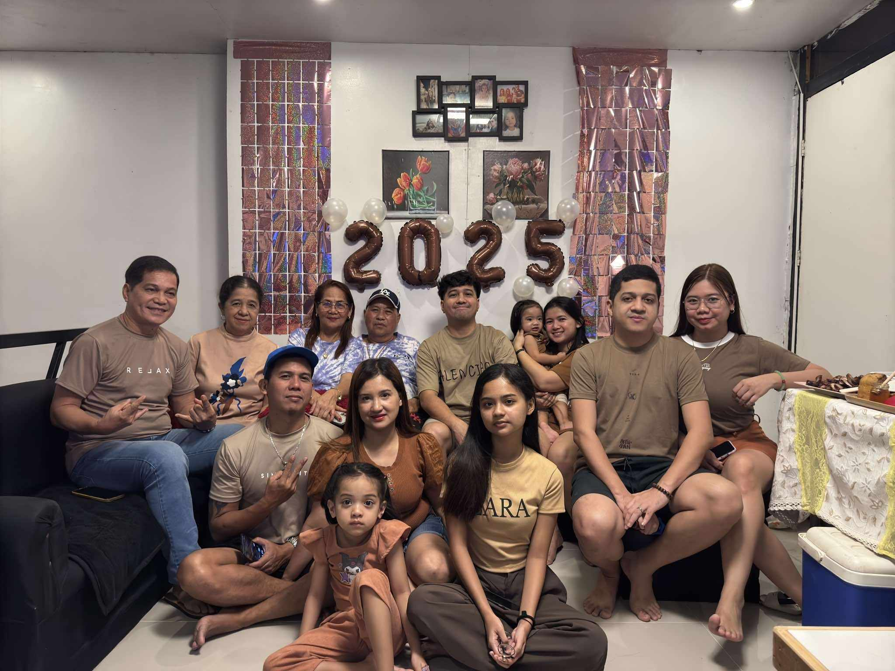

If we are moots, you'll probably know that I hate coffee. Just kidding! I am literally addicted to coffee. WITH ICE! Last December, Bleu Bean offered a loyalty card for those customers who bought Specialty Coffee or Barista Choice. If you're looking for 39-50 pesos worth of coffee, then this is not for you. This kind of coffee is a bit pricey, but really worth it. I usually buy their Premium Coffee which the price ranges from 49-59 pesos, but since they had a loyalty card offered, I bought the pricey one. For your fifth buy, you'll receive a mug. And for your tenth or last buy, you'll get a tote bag and 1 free drink!
Fast forward, this December I tried my best to get those freebies. I always visit their facebook page to see if their shop is open. I only have 1 week left to complete those ten cups because there are days that their shop will be closed due to Holidays. And finally, this January 02, I completed the ten cups and got their tote bag! The employee congratulated me. Am I worth it to be congratulated? Lol. For a moment, I feel like a normal person. I was living?
They have this unique tagline that asks people if ever they are feeling bleu. Yes, I think this cafe is destined for people like me. I commend the owner of this shop because they really care about their customers and people's well-being. Actually, I saw how they started. I witnessed them grow and I am really proud of them. They now have few branches on different places, waaaaaaaaah.
Anyway, here's more of my gallery photos. Thereeeeeeeee's moreeeeeee to exploreeeeeee!
|  | ||
|---|---|---|
We celebrated New Year's Eve in our house with my family from both mother and father side. We exchanged some gifts. I am grateful for this day.
| |
|---|
You probably don't think of me as one of your closest friend, but I am actually happy to be with you people. Thank you for making me feel alive. Insert Ansherina, Jeyana, Nadine, and Allan.